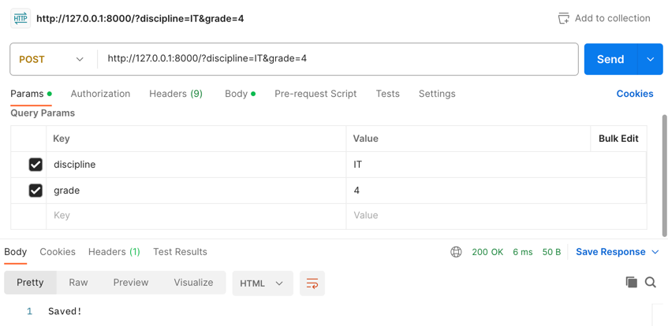

Задание 5
Необходимо написать простой web-сервер для обработки GET и POST http-запросов средствами Python и библиотеки socket.
Задание: сделать сервер, который может:
- Принять и записать информацию о дисциплине и оценке по дисциплине.
- Отдать информацию обо всех оценках по дисциплине в виде html-страницы.
Выполнение
import socket
class MyHTTPServer:
def __init__(self, host, port):
self.conn = socket.socket(socket.AF_INET, socket.SOCK_STREAM)
self.conn.setsockopt(socket.SOL_SOCKET, socket.SO_REUSEADDR, 1)
self.conn.bind((host, port))
self.conn.listen(1)
self.grades = {}
def serve_forever(self):
while True:
client, addr = self.conn.accept()
self.serve_client(client)
def serve_client(self, client):
data = client.recv(16384).decode("utf-8")
self.parse_request(client, data)
def parse_request(self, client, data):
lines = data.split("\n")
method, url, version = lines[0].split()
params = (
{p.split("=")[0]: p.split("=")[1] for p in url.split("?")[1].split("&")}
if "?" in url
else None
)
self.handle_request(client, method, params)
def handle_request(self, client, method, params):
if method == "GET":
self.send_response(client, 200, "OK", self.grades_to_html())
elif method == "POST":
discipline = params.get("discipline")
grade = params.get("grade")
self.grades[discipline] = grade
self.send_response(client, 200, "OK", "Saved!")
else:
self.send_response(client, 404, "Not Found", "Incorrect method.")
def send_response(self, client, code, reason, body):
response = f"HTTP/1.1 {code} {reason}\nContent-Type: text/html\n\n{body}"
client.send(response.encode("utf-8"))
client.close()
def grades_to_html(self):
page = (
f"<html><body><ul>"
f"{''.join([f'<li>{discipline}: {grade}' for discipline, grade in self.grades.items()])}"
f"</ul></body></html>"
)
return page
if __name__ == "__main__":
host = "127.0.0.1"
port = 8000
server = MyHTTPServer(host, port)
try:
server.serve_forever()
except KeyboardInterrupt:
server.conn.close()
Программа запускает сервер на порту 8000, инициализирует внутри класса словарь для хранения оценок и ожидает запросов.
При получении запроса он парсится методом parse_request, который выделяет из него метод, url и параметры. После этого
вызывается метод handle_request, который в зависимости от вида запроса либо сохраняет оценку в словарь, возвращая
ответ с кодом 200 и сообщением "Saved!", либо возвращает html-страницу с оценками методом grades_to_html.
Пример работы программы
Для тестирования GET и POST запросов была использована программа Postman.
Первый GET-запрос (возвращает пустую страницу):
POST-запросы (сохраняют оценки по дисциплинам):

Второй GET-запрос (возвращает страницу с оценками):